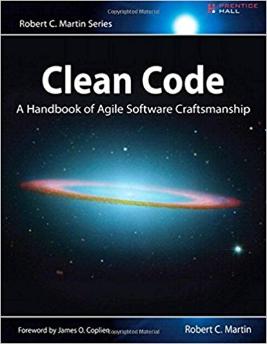

Introdução ao Clean Code Meetup
- Júlio Biason
- @juliobiason
- julio.biason@gmail.com
- https://presentations.juliobiason.me
De onde saiu essa ideia?
The Book
Single Responsibility Principle Open/Closed Principle Liskov Substituiion Principle Interface Segregation Principle Dependency Inversion Principle
Luciano Ramalho
# Python: check that password as at least one lowercase
# letter, one uppercase and three digits
def check(password):
return (any(c.islower() for c in password)
and any(c.isupper() for c in password)
and sum(c.isdigit() for c in password) >= 3)David Beazley
from collections import Counter
from unicodedata import category
def check(password):
c = Counter(category(ch) for ch in password)
return c['Ll']>=1 and c['Lu'] >= 1 and c['Nd'] >= 3
Julio Biason
LOWERCASE_CHARS = "Ll"
UPCASE_CHARS = "Lu"
NUMBERS = "Nd"
def check(password):
number_of = Counter(category(ch) for ch in password)
return number_of[LOWERCASE_CHARS] >= 1 and number_of[UPCASE_CHARS] >= 1 and number_of[NUMBERS] >= 3
"Programs must be written for people to read, and only incidentally for machines to execute."
Abelson / Sussman, "Structure and Interpretation of Computer Programs"
Regras

one man's rubbish may be another's treasure
Hector Urquhart